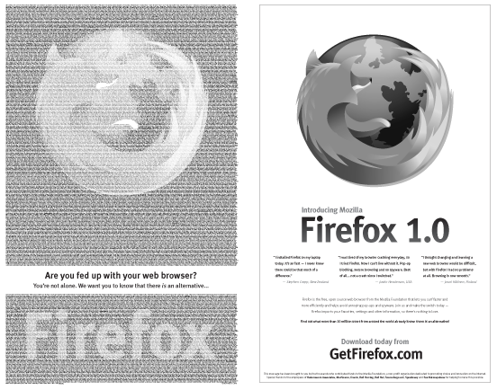
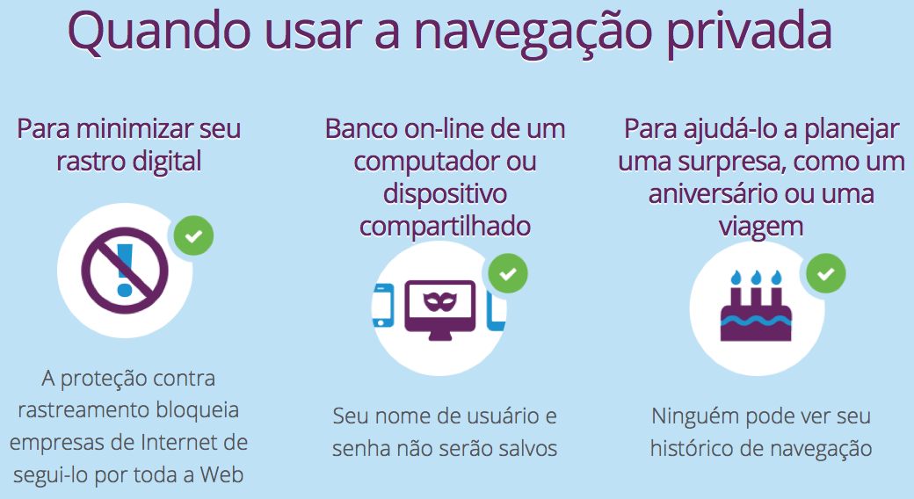
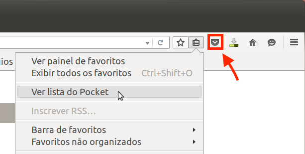
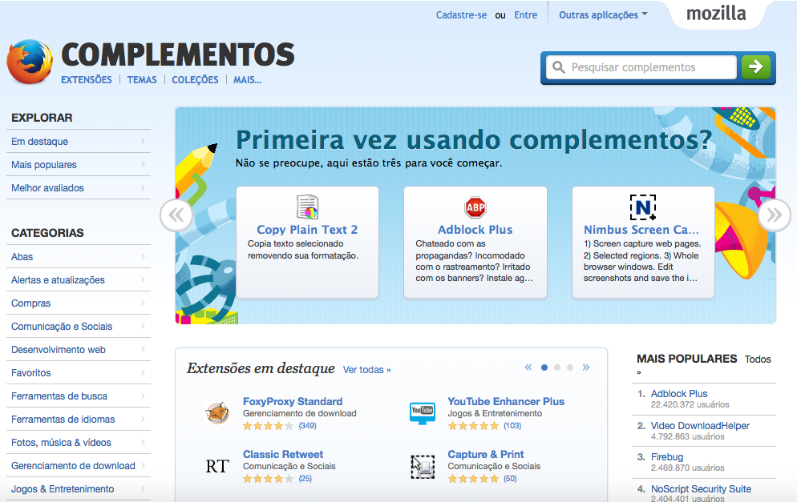

O que há de novo no
Firefox?
Comunidade Mozilla Brasil - mozillabrasil.org.br
Jaime Maretoli e Nelson Dutra
Conheça o Manifesto Mozilla e saiba o que pensamos e como pensamos
Lutamos por uma internet de todos para todos
Jaime Maretoli
- Técnico em Informática formado pelo Senac
- Bacharelando em Ciência da Computação (URI)
- Pesquisador na área de Desenvolvimento Móvel
- Mozillian desde Fevereiro de 2015
- Membro do Hackerspace Laboratório Hacker
- Sempre em eventos por aí...
Nelson Dutra
- ...
- ...
- ...
- ...
- ...
- ...
Você conhece a Mozilla?

História
- O Projeto Mozilla nasceu com o lançamento do código fonte do navegador Netscape
- Lançamento do Mozilla 1.0: A Primeira Grande Versão
- Criação Fundação Mozilla Sem Fins Lucrativos
- Na versão 1.0 do Firefox, +10.000 apoiaram à missão Mozilla pagando um anúncio New York Times
História
História
- Reorganização da Fundação: Criação da Corporação Mozilla
- Recorde Guinness World Record: Maior número de downloads em 24h
- 1º Navegador Móvel com complementos: Firefox Móvel tornou-se disponível na plataforma Nokia Maemo
- Início do projeto do Firefox OS
- Mozilla nomeada a empresa de Internet mais confiável
- Firefox OS Lançado na Mobile World Congress
- Firefox OS com primeiros telefones comerciais na Espanha
- Lançamento do Firefox redesenhado e com muitas novidades
2014
2 Versões Principais
Muitas Mudanças Visíveis
Algumas features que você pode ter perdido
Australis
Nós lançamos ele, finalmente!
Australis

Aniversário de 10 Anos
Versão 1.0
 Novembro de 2004
Novembro de 2004
Privacidade
"Firefox é criado para proteger sua privacidade"
"Mozilla a empresa mais confiável da Internet em privacidade"
Navegação privada
"Mais proteção. Mais privacidade. Somente com o Firefox."
Navegação privada
- Não salva histórico, pesquisas ou cookies;
- Mantém apenas favoritos e downloads;
- Proteção contra rastreamento;
"O centro de controle cobre você
"O escudo à esquerda da barra de endereço, significa que o Firefox está te protegendo dos potenciais perseguidores."
"Navegue sem se preocupar..."
Botão Esquecer

DuckDuckGo
Instalado por padrão

Personalize sua nova aba...

"Você permanece no controle do seu histórico de navegação e pode desativar as recomendações sempre que quiser"
Abas Fixas
"Mantenha suas páginas web favoritas abertas e a apenas um clique de distância"
Botão direito em cima da aba > Fixar aba

"Identifique abas barulhentas e silencie em um único clique. Sem afetar outras abas ou janelas."
Grupos de abas
DESCONTINUADO
A partir da versão 45
Como vou organizar minhas abas?
Abas Fixas
Painel de Favoritos
Pocket para Firefox
Complementos
Developer Edition

Sistema de Busca

Firefox Hello

Menu de contexto melhorado
O Firefox da sua maneira...
Indicador de compartilhamento WebRTC
"permite o compartilhamento de arquivos e chamadas em voz e vídeo diretamente do navegador, sem necessidade de instalar plugins"
2015
- Mais
<video>, menos Flash- Adeus travamentos!
- OpenH264
- EME
- shumway
- Signed add-ons
- e10s
Control Center

Firefox Sync
Preparar, apontar, sincronizar!
Sincronize tudo... ou não.
"Você escolhe aonde e quais informações quer sincronizar no seu Firefox"

Abas Sincronizadas
Pocket e Firefox
"Salve páginas e vídeos no Pocket com apenas um clique. Leia quando quiser."
Complementos | Addons | Extensões
http://addons.mozilla.org/
Complementos | Addons | Extensões
http://addons.mozilla.org/
Lá você encontra...
Mais Populares
Em destaque
Central do Desenvolvedor
E muito mais...
Gerenciar seus complementos...
Menu > Complementos
Página de Gerenciamento
Menu > Complementos
Gerenciador de
Senhas
Comunidade
"Trabalha em conjunto para manter a Internet viva e acessível para que todos sejam contribuidores e criadores da Web com uma plataforma de código aberto"
"Hoje a Mozilla tem colaboradores em cada continente, incluindo a Antártida (onde o Firefox é usado por 80% da população)"
"A comunidade ajudou a traduzir o Firefox para 70 idiomas, tornando o navegador disponível para mais de 90% da população mundial"
Manifesto Mozilla
https://www.mozilla.org/pt-BR/about/manifesto/
Na prática...
"Fazemos parte de uma comunidade global de pessoas que acreditam que a inovação, liberdade e oportunidade são a chave para a saúde contínua da Internet"

Quem somos?
"Somos programadores, advogados, cientistas, designers, estudantes... Somos pessoas comuns que lutam para garantir a sua liberdade e direito de expressão."

Obrigado!
DÚVIDAS | SUGESTÕES
Lista - lists.mozilla.org/listinfo/community-brasilFacebook - fb.com/mozillabrasil
Twitter - https://twitter.com/mozillabrasil
Site Oficial - www.mozilla.org
Site Oficial Brasil - www.mozillabrasil.org.br
Blog - http://blog.mozillabrasil.org.br/
Participe - http://mozillabrasil.org.br/participe/